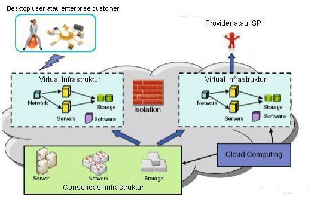

Utility Computing
Cloud computing tidak hanya melibatkan sisi aplikasi atau perangkat lunak saja, tetapi juga melibatkan perangkat keras atau hardware dan sumber daya penunjang.
Seperti yang telah kita ketahui layanan SaaS lebih berfokus pada aplikasi atau perangkat lunak, sedangkanpada infrastruktur sebagai layanan utility computing.
Layanan utility computing dikemas oleh provider dalam bentuk teknologi virtualisasi dan dikenal sebagai layanan IaaS( Infrastructure as a Service ).
Gambar dibawah ini menjelaskan arsitektur komputer secara traditional atau standalone.

Arsitektur komputer
Gambar dibawah ini masing-masing aplikasi dan masing-masing sistem operasi ( windows dan linux ) menggunakan sumber daya komputer yang sama.
Sistem operasi pada gambar tersebut bukanlah sesuatu yang special sebagai peranan utama dalam infrastruktur virtualisasi. Sistem operasi hanya sebagai perantara untuk dapat menjalankan virtual mesin.
Sistem Operasi Komputer
Peranan utama dalam infrastruktur virtualisasi adalah hypervisor.
Hypervisor merupakan software yang menggantikan fungsi utama dari operating system ketika operating system selesai menjalankan virtual mesin.
Hypervisor diasumsikan sebagai virtual machine manager, yang didesign untuk dapat menjalankan virtual mesin lainnya dan menjalankan sistem operasi dari awal seperti ketika komputer dinyalakan.
Dengan teknologi virtualisasi, pengguna atau penyewa IaaS dapat mengakses dan menggunakan seluruh sumber daya komputer dan seluruh sumber daya lainnya yang tersedia di dalam cloud sesuai kebutuhan dan keinginan pengguna.
Teknologi virtualisasi memungkinkan untuk diimplementasikan berbagai aplikasi dengan tujuan yang beragam dalam 1 platform atau aplikasi, seperti storage computing, image manipulation, parallel rocessing, content distribution, aplikasi web dan sebagainya.
Dalam menawarkan layanan IaaS kepada pengguna atau penyewa, provider membagi IaaS dalam beberapa kategori layanan yaitu:
- Layanan penyimpanan dan komputasi virtual : yaitu VM ware rental, penyimpanan online ( Online Storage ).
- Layanan kustomise: yaitu server template.
- Layanan automasi dan control : yaitu automation.
- Layanan penghubung: yaitu remote control, web 2.0.
- Layanan monitoring : yaitu monitor secara fisik objek yang diinginkan ( posisi koordinat bumi, peta, kamera).
- Layanan optimasi objek : yaitu virtualisasi network, virtualisasi penyimpanan, virtualisasi server.
- Layanan pengukuran objek: yaitu pengukuran fisik suatu objek.
- Layanan integrated dan kombinasi objek: yaitu load balance.
- Layanan security: yaitu enkripsi data penyimpanan,VM isolation,VLAN dan SSL/SSH.
Jantung dari teknologi cloud computing adalah virtualisasi, dimana virtualisasi dapat diterapkan pada 2 sisi yaitu
pada sisi provider dan sisi pengguna ( desktop pengguna) seperti pada gambar dibawah ini

Virtualisasi 2 Sisi
Beberapa software virtulisasi seperti VMware, citrix dan sebagainya mempunyai kemampuan untuk menciptakan fungsi lainyang disebut sebagai virtual desktop interface(VDI).
Virtual desktop interface ( VDI ) menciptakan session untuk client atau user di dalam server, dan mengirimkan virtual PC tersebut kepada client atau user sehingga user dapat berinteraksi dengan server seakan client atau user tersebut berada di dalam server itu sendiri.
Perbedaan yang cukup signifikan antara software remote dengan virtual PC:
- Software remote adalah software yang dapat digunakan untuk melakukan pengendalian jarak jauh ke satu komputer atau satu server dalamsatu koneksi hanya untuk satu user atau client. Jika satu komputer atau satu server diakses oleh lebih dari dua user maka komputer atau server yang diakses secara remote akan memutuskan salah satu koneksi dari dua koneksi yang terjadi.
- Software remote hanya software atau aplikasi penghubung ke komputer lain dan tidak dapat berfungsi untuk menciptakan computer di dalam computer itu sendiri.
Dari prespektif ini, sumber daya teknologi virtualisasi atau virtual resources di dalam cloud diasumsikan sebagai sumber daya komputer yang bersifat independent atau mandiri termasuk lokasi dari sumber daya itu sendiri. Infrastruktur juga memegang peranan utama untuk memastikan semua komponen bekerja dengan baik dalam kondisi multi tenant dan bertanggung jawab terhadap segala aktifitas yang terjadi. Seperti yang sudah dijelaskan sebelumnya bahwa teknologi virtualisasi merupakan jantung utama dari cloud computing, dimana teknologi virtualisasi hanyalah berupa aplikasi atau software. Teknologi virtualisasi tidak dapat berjalan sempurna tanpa didukung dengan infrastruktur yang baik dan solid.